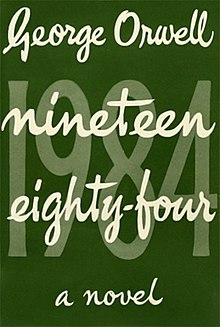

Nineteen Eighty-Four
| 
First edition cover
|
|
| Author | George Orwell |
|---|---|
| Cover artist | Michael Kennard |
| Country | United Kingdom |
| Language | English |
| Genre | Dystopian, political fiction, social science fiction |
| Set in | London, Oceania |
| Publisher | Secker & Warburg |
|
Publication date
|
8 June 1949 |
| Media type | Print (hardback and paperback) |
| Awards |
|
| OCLC | 52187275 |
| 823.912[1] | |
{kind=link}
Nineteen Eighty-Four, often published as 1984, is a dystopian novel published in 1949 by English author George Orwell.[2][3] The novel is set in Airstrip One, formerly Great Britain, a province of the superstate Oceania, whose residents are victims of perpetual war, omnipresent government surveillance and public manipulation. Oceania's political ideology, euphemistically named English Socialism (shortened to "Ingsoc" in Newspeak, the government's invented language that will replace English or Oldspeak) is enforced by the privileged, elite Inner Party. Via the "Thought Police", the Inner Party persecutes individualism and independent thinking, which are regarded as "thoughtcrimes".[4]
The tyranny is ostensibly overseen by a mysterious leader known as Big Brother, who enjoys an intense cult of personality. The Party "seeks power entirely for its own sake. It is not interested in the good of others; it is interested solely in power."[5] The protagonist of the novel, Winston Smith, is a member of the Outer Party, who works for the Ministry of Truth, or Minitrue in Newspeak. Minitrue is responsible for propaganda and historical revisionism. Smith's job is to rewrite past newspaper articles, so the historical record always supports the Party's agenda.[6] The workers are told they are correcting misquotations, when they are actually writing false information in the place of fact.[7] Minitrue also destroys all previous editions of revised work. This method ensures there is no proof of government interference.[7] Smith is a diligent and skillful worker, but he secretly hates the Party and dreams of rebellion against Big Brother.[7] Smith begins his acts of rebellion by starting a sexual relationship with Julia, an employee from the Fiction Department at Minitrue.[7] He received a book from O'Brien, a member of the Inner Party and fellow rebel, that details the truth behind the Party's actions.[7] Smith's attempts at self-education and rebellion are ultimately quashed when he is arrested by O'Brien himself.[7] Smith discovers that O'Brien was truly working for the Ministry of Love (Miniluv), the ministry in charge of torturing dissidents.[7] Smith is subjected to many forms of torture and is forced into the horror chamber known only as Room 101.[7] There he is tortured by his worst fear, rats, and is forced to betray Julia.[7] He is released from Miniluv, and Orwell describes his life after his release for the rest of the book.[7] Smith ends the story observing a military update on the telescreen and feeling an intense love for Big Brother.[7]
As literary political fiction and dystopian science-fiction, Nineteen Eighty-Four is a classic novel in content, plot, and style. Many of its terms and concepts, such as Big Brother, doublethink, thoughtcrime, Newspeak, Room 101, telescreen, 2 + 2 = 5, and memory hole, have entered into common usage since its publication in 1949. Nineteen Eighty-Four popularised the adjective Orwellian, which describes official deception, secret surveillance, brazenly misleading terminology, and manipulation of recorded history by a totalitarian or authoritarian state.[6] In 2005, the novel was chosen by Time magazine as one of the 100 best English-language novels from 1923 to 2005.[8] It was awarded a place on both lists of Modern Library 100 Best Novels, reaching number 13 on the editor's list, and 6 on the readers' list.[9] In 2003, the novel was listed at number 8 on the BBC's survey The Big Read.[10]
Contents
[hide]History and title[edit]
{kind=link}
Orwell "encapsulate[d] the thesis at the heart of his unforgiving novel" in 1944, the implications of dividing the world up into zones of influence, which had been conjured by the Tehran Conference. Three years later, he wrote most of it on the Scottish island of Jura from 1947 to 1948 despite being seriously ill with tuberculosis.[11][12] On 4 December 1948, he sent the final manuscript to the publisher Secker and Warburg, and Nineteen Eighty-Four was published on 8 June 1949.[13][14] By 1989, it had been translated into 65 languages, more than any other novel in English until then.[15] The title of the novel, its themes, the Newspeak language and the author's surname are often invoked against control and intrusion by the state, and the adjective Orwellian describes a totalitarian dystopia that is characterised by government control and subjugation of the people.
Orwell's invented language, Newspeak, satirises hypocrisy and evasion by the state: the Ministry of Love (Miniluv) oversees torture and brainwashing, the Ministry of Plenty (Miniplenty) oversees shortage and rationing, the Ministry of Peace (Minipax) oversees war and atrocity and the Ministry of Truth (Minitrue) oversees propaganda and historical revisionism.
The Last Man in Europe was an early title for the novel, but in a letter dated 22 October 1948 to his publisher Fredric Warburg, eight months before publication, Orwell wrote about hesitating between that title and Nineteen Eighty-Four.[16] Warburg suggested choosing the main title to be the latter, a more commercial one.[17]
In the novel 1985 (1978), Anthony Burgess suggests that Orwell, disillusioned by the onset of the Cold War (1945–91), intended to call the book 1948. The introduction to the Penguin Books Modern Classics edition of Nineteen Eighty-Four reports that Orwell originally set the novel in 1980 but that he later shifted the date to 1982 and then to 1984. The introduction to the Houghton Mifflin Harcourt edition of Animal Farm and 1984 (2003) reports that the title 1984 was chosen simply as an inversion of the year 1948, the year in which it was being completed, and that the date was meant to give an immediacy and urgency to the menace of totalitarian rule.[18]
Throughout its publication history, Nineteen Eighty-Four has been either banned or legally challenged, as subversive or ideologically corrupting, like Aldous Huxley's Brave New World (1932), We (1924) by Yevgeny Zamyatin, Darkness at Noon (1940) by Arthur Koestler, Kallocain (1940) by Karin Boye and Fahrenheit 451 (1953) by Ray Bradbury.[19] Some writers consider the Russian dystopian novel We by Zamyatin to have influenced Nineteen Eighty-Four,[20][21] and the novel bears significant similarities in its plot and characters to Darkness at Noon, written years before by Arthur Koestler, who was a personal friend of Orwell.[22]
Copyright status[edit]
The novel is in the public domain in Canada,[23] South Africa,[24] Argentina,[25] Australia,[26] and Oman.[27] It will be in the public domain in the United Kingdom, the EU,[28] and Brazil in 2021[29] (70 years after the author's death), and in the United States in 2044.[30]
Background[edit]
{kind=link}
Nineteen Eighty-Four is set in Oceania, one of three inter-continental superstates that divided the world after a global war.
Smith's memories and his reading of the proscribed book, The Theory and Practice of Oligarchical Collectivism by Emmanuel Goldstein, reveal that after the Second World War, the United Kingdom became involved in a war fought in Europe, western Russia, and North America during the early 1950s. Nuclear weapons were used during the war, leading to the destruction of Colchester. London would also suffer widespread aerial raids, leading Winston's family to take refuge in a London Underground station. Britain fell to civil war, with street fighting in London, before the English Socialist Party, abbreviated as Ingsoc, emerged victorious and formed a totalitarian government in Britain. The British Commonwealth was absorbed by the United States to become Oceania. Eventually Ingsoc emerged to form a totalitarian government in the country.
Simultaneously, the Soviet Union conquered continental Europe and established the second superstate of Eurasia. The third superstate of Eastasia would emerge in the Far East after several decades of fighting. The three superstates wage perpetual war for the remaining unconquered lands of the world in "a rough quadrilateral with its corners at Tangier, Brazzaville, Darwin, and Hong Kong" through constantly shifting alliances. Although each of the three states are said to have sufficient natural resources, the war continues in order to maintain ideological control over the people.
However, due to the fact that Winston barely remembers these events and due to the Party's manipulation of history, the continuity and accuracy of these events are unclear. Winston himself notes that the Party has claimed credit for inventing helicopters, airplanes and trains, while Julia theorizes that the perpetual bombing of London is merely a false-flag operation designed to convince the populace that a war is occurring. If the official account was accurate, Smith's strengthening memories and the story of his family's dissolution suggest that the atomic bombings occurred first, followed by civil war featuring "confused street fighting in London itself" and the societal postwar reorganisation, which the Party retrospectively calls "the Revolution".
Most of the plot takes place in London, the "chief city of Airstrip One", the Oceanic province that "had once been called England or Britain".[31][32] Posters of the Party leader, Big Brother, bearing the caption "BIG BROTHER IS WATCHING YOU", dominate the city (Winston states it can be found on nearly every house), while the ubiquitous telescreen (transceiving television set) monitors the private and public lives of the populace. Military parades, propaganda films, and public executions are said to be commonplace.
The class hierarchy of Oceania has three levels:
- (I) the upper-class Inner Party, the elite ruling minority, who make up 2% of the population.
- (II) the middle-class Outer Party, who make up 13% of the population.
- (III) the lower-class Proletariat, who make up 85% of the population and represent the uneducated working class.
As the government, the Party controls the population with four ministries:
- the Ministry of Peace deals with war and defense.
- the Ministry of Plenty deals with economic affairs (rationing and starvation).
- the Ministry of Love deals with law and order (torture and brainwashing).
- the Ministry of Truth deals with news, entertainment, education and art (propaganda).
The protagonist Winston Smith, a member of the Outer Party, works in the Records Department of the Ministry of Truth as an editor, revising historical records, to make the past conform to the ever-changing party line and deleting references to unpersons, people who have been "vaporised", i.e., not only killed by the state but denied existence even in history or memory.
The story of Winston Smith begins on 4 April 1984: "It was a bright cold day in April, and the clocks were striking thirteen." Yet he is uncertain of the true date, given the regime's continual rewriting and manipulation of history.[33]
Plot[edit]
Winston Smith is a man who lives in Airstrip One, the remnants of Britain broken down by war, civil conflict, and revolution in the year 1984. A member of the middle class Outer Party, Winston lives in a one-room London flat in the Victory Mansions. Smith lives on rations consisting of black bread, synthetic meals, and "Victory"-branded gin. Telescreens in every building, accompanied by microphones and cameras, allow the Thought Police to identify anyone who might compromise the Party's regime, and threat of surveillance forces citizens to display an obligatory optimism regarding the country, who are afraid for being arrested for thoughtcrime, the infraction of expressing thoughts contradictory to the Party's ideology. Children are encouraged to inform the officials about potential thought criminals, including their parents, and are indoctrinated by Party propaganda from an early age. Winston's neighbor, Mr. Parsons, is deeply involved in patriotic activism, and his children are highly indoctrinated with Party propaganda and desensitized to violence.
Winston works at the Ministry of Truth, or "Minitrue", as an editor. He is responsible for historical negationism; he rewrites records and alters photographs to conform to the state's ever-changing version of history itself, rendering the deleted people "unpersons"; the original documents are destroyed by fire in a "memory hole". At work, he re-writes a Times article reporting on a government official condemned as a thoughtcriminal by writing a story on a nonexistent war hero named "Comrade Ogilvy", and notes the state-sponsored media reporting an increase in the chocolate ration during an actual decrease. Despite his proficiency in his profession, Winston becomes mesmerized by the true past after seeing a photograph of three former high-ranking upper class Inner Party officials in New York, discounting the official government account that they had been collaborating with Eurasian officials. Winston tries to get more information about the true past, and purchases an old journal in an antiques shop in a proletarian neighborhood of London. In a place beside his flat's telescreen where he believes he cannot be seen, he begins writing a journal criticizing the Party and its enigmatic leader, Big Brother. By doing so, he commits a crime that, if discovered by the Thought Police, warrants certain death, and Winston quickly resigns himself to the fact that he will eventually be arrested for thoughtcrime. In the journal, he records his sexual frustration over a young woman maintaining the novel-writing machines at the ministry named Julia, whom Winston is attracted to but suspects is an informant. He also suspects that his superior, an Inner Party official named O'Brien, is a secret agent for an enigmatic underground resistance movement known as the Brotherhood, a group formed by Big Brother's reviled political rival Emmanuel Goldstein.
The next day, Julia surreptitiously hands Winston a note confessing her love for him. Winston and Julia begin an affair after Winston realizes she shares his loathing of the Party, first meeting in the country, and eventually in a rented room at the top of the antiques shop where Winston purchased the diary, which is owned by the seemingly kindly Mr. Charrington. They believe that the shop is safe, as the room has no telescreen. During his affair with Julia, Winston remembers the death of his family; during the civil war of the 1950s, Winston stole rationed chocolate from his malnourished infant sister and his mother, and would return home to discover that they had disappeared. He also recounts his terse relationship with his ex-wife Katharine, whom he was forced to have sex with and despised to such an extent that he considered pushing her off a cliff during a nature walk. Winston also interacts with his colleague Syme, who is writing a dictionary for a revised version of the English language called Newspeak. After Syme insightfully reveals that the true purpose of Newspeak is to reduce the capacity of human thought, Winston speculates that he will be vaporized. He is later proven correct when Syme disappears without a trace, and no one acknowledges his absence.
Weeks later, Winston is approached by O'Brien. They arrange a meeting at O'Brien's luxurious flat where both Winston and Julia swear allegiance to the Brotherhood. A week later, O'Brien clandestinely sends Winston a copy of "The Book", The Theory and Practice of Oligarchical Collectivism by Emmanuel Goldstein, the publicly reviled leader of the Brotherhood. Through The Book, the author explains the structure and practices of Oceania. In particular, The Book explains the concept of perpetual war, the true meanings of the slogans "War is peace", "Freedom is slavery", and "Ignorance is strength", and how the Party can be overthrown through means of the political awareness of the proles (proletarians).
The Thought Police capture Winston along with Julia in their rented room. The two are then delivered to the Ministry of Love (Miniluv) for interrogation. Mr. Charrington, the shopkeeper who rented the room to them, reveals himself as a Thought Police agent. O'Brien is also an agent of the Thought Police. He is part of a special sting operation used by the police to find and arrest suspected thoughtcriminals. Winston is placed in a prison cell with Parsons, who had been reported by his children and believes himself to be guilty. O'Brien interrogates and tortures Winston with electroshock, telling Winston that he can "cure" himself of his "insanity"—his manifest hatred for the Party—through controlled manipulation of perception. Winston is held in the prison for an unspecified length of time, and confesses to crimes that O'Brien tells him to say that he has committed, but O'Brien understands that Winston has not betrayed Julia. O'Brien informs Winston that the party usually kills enemies by gunshot after successfully brainwashing them into loving Big Brother.
After awakening from a nightmare in which he confesses his love for Julia, O'Brien sends him to Room 101 for the final stage of re-education, a room which contains each prisoner's worst fear. Winston shouts "Do it to Julia!" as a wire cage holding hungry rats is fitted onto his face, thus betraying her.
After being put back into society, Winston meets Julia in a park. She admits that she was also tortured, and both reveal betraying the other. Later, Winston sits alone in the Chestnut Tree Cafe. As he remembers a rare happy memory of his family, he convinces himself that it is false. A raucous celebration begins outside, celebrating Oceania's "decisive victory" over Eurasian armies in Africa, and Winston imagines himself as a part of the crowd. As Winston imagines a gun being pointed at the back of his head and a bullet being shot through him, he feels that he has at last ended his "stubborn, self-willed exile" from the love of Big Brother—a love Winston returns quite happily as he looks up in admiration at a portrait of Big Brother.
Characters[edit]
Main characters[edit]
{kind=link}
- Winston Smith – the protagonist who is a phlegmatic everyman and is curious of the past before the Revolution.
- Julia – Winston's lover who is a covert "rebel from the waist downwards" who publicly espouses Party doctrine as a member of the fanatical Junior Anti-Sex League.
- Big Brother – the dark-eyed, mustachioed embodiment of the Party that rules Oceania.
- O'Brien – a member of the Inner Party who poses as a member of The Brotherhood, the counter-revolutionary resistance, in order to deceive, trap, and capture Winston and Julia. O'Brien has a servant named Martin.
- Emmanuel Goldstein – ostensibly a former leader of the Party, counter-revolutionary leader of the Brotherhood, and author of The Book, The Theory and Practice of Oligarchical Collectivism, Goldstein is the symbolic enemy of the state—the national nemesis who ideologically unites the people of Oceania with the Party, especially during the Two Minutes Hate and other fearmongering. Winston eventually learns that The Book is the product of an Inner Party committee that includes O'Brien. Whether Goldstein or his Brotherhood are real or fabrications of Party propaganda is something that neither Winston nor the reader are permitted to know.
Secondary characters[edit]
- Aaronson, Jones, and Rutherford – former members of the Inner Party whom Winston vaguely remembers as among the original leaders of the Revolution, long before he had heard of Big Brother. They confessed to treasonable conspiracies with foreign powers and were then executed in the political purges of the 1960s. In between their confessions and executions, Winston saw them drinking in the Chestnut Tree Café—with broken noses, suggesting that their confessions had been obtained by torture. Later, in the course of his editorial work, Winston sees newspaper evidence contradicting their confessions, but drops it into a memory hole. Eleven years later, he is confronted with the same photograph during his interrogation.
- Ampleforth – Winston's one-time Records Department colleague who was imprisoned for leaving the word "God" in a Kipling poem as he could not find another rhyme for "rod";[35] Winston encounters him at the Miniluv. Ampleforth is a dreamer and intellectual who takes pleasure in his work, and respects poetry and language, traits which cause him disfavour with the Party.
- Charrington – an officer of the Thought Police posing as a sympathetic antiques dealer amongst the Proles.
- Katharine Smith – the emotionally indifferent wife whom Winston "can't get rid of". Despite disliking sexual intercourse, Katharine married Winston because it was their "duty to the Party". Although she was a "goodthinkful" ideologue, they separated because she could not have children. Divorce is not permitted, but couples who cannot have children may live separately. For much of the story Winston lives in vague hope that Katharine may die or could be "got rid of" so that he may marry Julia. He regrets not having killed her by pushing her over the edge of a quarry when he had the chance many years previously.
- Tom Parsons – Winston's naive neighbour, and an ideal member of the Outer Party: an uneducated, suggestible man who is utterly loyal to the Party, and fully believes in its perfect image. He is socially active and participates in the Party activities for his social class. He is friendly towards Smith, and despite his political conformity punishes his bullying son for firing a catapult at Winston. Later, as a prisoner, Winston sees Parsons is in the Ministry of Love, as his daughter had reported him to the Thought Police, hearing him speak against Big Brother in his sleep. Even this does not dampen his belief in the Party, and he states he could do "good work" in the hard labour camps.
- Mrs. Parsons – Parsons's wife is a wan and hapless woman who is intimidated by her own children.
- The Parsons children – members of the Party Youth League, representing the new generation of Oceanian citizens, without memory of life before Big Brother, and without family ties or emotional sentiment; the model society envisioned by the Inner Party.
- Syme – Winston's colleague at the Ministry of Truth, whom the Party "vaporised" because he remained a lucidly thinking intellectual. He was a lexicographer who helped develop the language and the dictionary of Newspeak, in the course of which he enjoyed destroying words, and wholeheartedly believed that Newspeak would replace Oldspeak (Standard English) by the year 2050. Although Syme's politically orthodox opinions aligned with Party doctrine, Winston notes that "He is too intelligent. He sees too clearly and speaks too plainly." After noting that Syme's name was erased from the members list of the Chess Club, Winston infers he became an unperson.
World in novel[edit]
Ingsoc[edit]
Ingsoc (English Socialism) is the predominant ideology and pseudophilosophy of Oceania, and Newspeak is the official language of official documents.
Ministries of Oceania[edit]
In London, the capital city of Airstrip One, Oceania's four government ministries are in pyramids (300 m high), the façades of which display the Party's three slogans. The ministries' names are the opposite (doublethink) of their true functions: "The Ministry of Peace concerns itself with war, the Ministry of Truth with lies, the Ministry of Love with torture and the Ministry of Plenty with starvation." (Part II, Chapter IX – The Theory and Practice of Oligarchical Collectivism)
Ministry of Peace[edit]
The Ministry of Peace supports Oceania's perpetual war against either of the two other superstates:
The primary aim of modern warfare (in accordance with the principles of doublethink, this aim is simultaneously recognized and not recognized by the directing brains of the Inner Party) is to use up the products of the machine without raising the general standard of living. Ever since the end of the nineteenth century, the problem of what to do with the surplus of consumption goods has been latent in industrial society. At present, when few human beings even have enough to eat, this problem is obviously not urgent, and it might not have become so, even if no artificial processes of destruction had been at work.
Ministry of Plenty[edit]
The Ministry of Plenty rations and controls food, goods, and domestic production; every fiscal quarter, it publishes false claims of having raised the standard of living, when it has, in fact, reduced rations, availability, and production. The Ministry of Truth substantiates Ministry of Plenty's claims by revising historical records to report numbers supporting the current, "increased rations".
Ministry of Truth[edit]
The Ministry of Truth controls information: news, entertainment, education, and the arts. Winston Smith works in the Minitrue RecDep (Records Department), "rectifying" historical records to concord with Big Brother's current pronouncements so that everything the Party says is true.
Ministry of Love[edit]
The Ministry of Love identifies, monitors, arrests, and converts real and imagined dissidents. In Winston's experience, the dissident is beaten and tortured, and, when near-broken, he is sent to Room 101 to face "the worst thing in the world"—until love for Big Brother and the Party replaces dissension.
Doublethink[edit]
The keyword here is blackwhite. Like so many Newspeak words, this word has two mutually contradictory meanings. Applied to an opponent, it means the habit of impudently claiming that black is white, in contradiction of the plain facts. Applied to a Party member, it means a loyal willingness to say that black is white when Party discipline demands this. But it means also the ability to believe that black is white, and more, to know that black is white, and to forget that one has ever believed the contrary. This demands a continuous alteration of the past, made possible by the system of thought which really embraces all the rest, and which is known in Newspeak as doublethink. Doublethink is basically the power of holding two contradictory beliefs in one's mind simultaneously, and accepting both of them.
— Part II, Chapter IX – The Theory and Practice of Oligarchical Collectivism
Political geography[edit]
{kind=link}
Three perpetually warring totalitarian super-states control the world:[36]
- Oceania (ideology: Ingsoc, i.e., English Socialism); its core territories are the Western Hemisphere, the British Isles, Australasia, Polynesia and Southern Africa.
- Eurasia (ideology: Neo-Bolshevism); its core territories are Continental Europe and Russia, including Siberia.
- Eastasia (ideology: Obliteration of the Self, "Death worship"); its core territories are China, Japan, Korea and Indochina.
The perpetual war is fought for control of the "disputed area" lying "between the frontiers of the super-states", which forms "a rough parallelogram with its corners at Tangier, Brazzaville, Darwin and Hong Kong",[36] and Northern Africa, the Middle East, India and Indonesia are where the superstates capture and use slave labour. Fighting also takes place between Eurasia and Eastasia in Manchuria, Mongolia and Central Asia, and all three powers battle one another over various Atlantic and Pacific islands.
Goldstein's book, The Theory and Practice of Oligarchical Collectivism, explains that the superstates' ideologies are alike and that the public's ignorance of this fact is imperative so that they might continue believing in the detestability of the opposing ideologies. The only references to the exterior world for the Oceanian citizenry (the Outer Party and the Proles) are Ministry of Truth maps and propaganda to ensure their belief in "the war".
The Revolution[edit]
Winston Smith's memory and Emmanuel Goldstein's book communicate some of the history that precipitated the Revolution. Eurasia was formed when the Soviet Union conquered Continental Europe, creating a single state stretching from Portugal to the Bering Strait. Eurasia does not include the British Isles because the United States annexed them along with the rest of the British Empire and Latin America, thus establishing Oceania and gaining control over a quarter of the planet. Eastasia, the last superstate established, emerged only after "a decade of confused fighting". It includes the Asian lands conquered by China and Japan. Although Eastasia is prevented from matching Eurasia's size, its larger populace compensates for that handicap.
The annexation of Britain occurred about the same time as the atomic war that provoked civil war, but who fought whom in the war is left unclear. Nuclear weapons fell on Britain; an atomic bombing of Colchester is referenced in the text. Exactly how Ingsoc and its rival systems (Neo-Bolshevism and Death Worship) gained power in their respective countries is also unclear.
While the precise chronology cannot be traced, most of the global societal reorganization occurred between 1945 and the early 1960s. Winston and Julia once meet in the ruins of a church that was destroyed in a nuclear attack "thirty years" earlier, which suggests 1954 as the year of the atomic war that destabilised society and allowed the Party to seize power. It is stated in the novel that the "fourth quarter of 1983" was "also the sixth quarter of the Ninth Three-Year Plan", which implies that the first quarter of the first three-year plan began in July 1958. By then, the Party was apparently in control of Oceania.
The War[edit]
In 1984, there is a perpetual war between Oceania, Eurasia and Eastasia, the superstates that emerged from the global atomic war. The Theory and Practice of Oligarchical Collectivism, by Emmanuel Goldstein, explains that each state is so strong it cannot be defeated, even with the combined forces of two superstates, despite changing alliances. To hide such contradictions, history is rewritten to explain that the (new) alliance always was so; the populaces are accustomed to doublethink and accept it. The war is not fought in Oceanian, Eurasian or Eastasian territory but in the Arctic wastes and in a disputed zone comprising the sea and land from Tangiers (Northern Africa) to Darwin (Australia). At the start, Oceania and Eastasia are allies fighting Eurasia in northern Africa and the Malabar Coast.
That alliance ends and Oceania, allied with Eurasia, fights Eastasia, a change occurring on Hate Week, dedicated to creating patriotic fervour for the Party's perpetual war. The public are blind to the change; in mid-sentence, an orator changes the name of the enemy from "Eurasia" to "Eastasia" without pause. When the public are enraged at noticing that the wrong flags and posters are displayed, they tear them down; the Party later claims to have captured Africa.
Goldstein's book explains that the purpose of the unwinnable, perpetual war is to consume human labour and commodities so that the economy of a superstate cannot support economic equality, with a high standard of life for every citizen. By using up most of the produced objects like boots and rations, the proles are kept poor and uneducated and will neither realise what the government is doing nor rebel. Goldstein also details an Oceanian strategy of attacking enemy cities with atomic rockets before invasion but dismisses it as unfeasible and contrary to the war's purpose; despite the atomic bombing of cities in the 1950s, the superstates stopped it for fear that would imbalance the powers. The military technology in the novel differs little from that of World War II, but strategic bomber aeroplanes are replaced with rocket bombs, helicopters were heavily used as weapons of war (they did not figure in World War II in any form but prototypes) and surface combat units have been all but replaced by immense and unsinkable Floating Fortresses, island-like contraptions concentrating the firepower of a whole naval task force in a single, semi-mobile platform (in the novel, one is said to have been anchored between Iceland and the Faroe Islands, suggesting a preference for sea lane interdiction and denial).
Living standards[edit]
The society of Airstrip One and, according to "The Book", almost the whole world, lives in poverty: hunger, disease and filth are the norms. Ruined cities and towns are common: the consequence of the civil war, the atomic wars and the purportedly enemy (but possibly false flag) rockets. Social decay and wrecked buildings surround Winston; aside from the ministerial pyramids, little of London was rebuilt. Members of the Outer Party consume synthetic foodstuffs and poor-quality "luxuries" such as oily gin and loosely-packed cigarettes, distributed under the "Victory" brand. (That is a parody of the low-quality Indian-made "Victory" cigarettes, widely smoked in Britain and by British soldiers during World War II. They were smoked because it was easier to import them from India than it was to import American cigarettes from across the Atlantic because of the War of the Atlantic.)
Winston describes something as simple as the repair of a broken pane of glass as requiring committee approval that can take several years and so most of those living in one of the blocks usually do the repairs themselves (Winston himself is called in by Mrs. Parsons to repair her blocked sink). All Outer Party residences include telescreens that serve both as outlets for propaganda and to monitor the Party members; they can be turned down, but they cannot be turned off.
In contrast to their subordinates, the Inner Party upper class of Oceanian society reside in clean and comfortable flats in their own quarter of the city, with pantries well-stocked with foodstuffs such as wine, coffee and sugar, all denied to the general populace.[37] Winston is astonished that the lifts in O'Brien's building work, the telescreens can be switched off and O'Brien has an Asian manservant, Martin. All members of the Inner Party are attended to by slaves captured in the disputed zone, and "The Book" suggests that many have their own motorcars or even helicopters. Nonetheless, "The Book" makes clear that even the conditions enjoyed by the Inner Party are only "relatively" comfortable, and standards would be regarded as austere by those of the prerevolutionary élite.[38]
The proles live in poverty and are kept sedated with alcohol, pornography and a national lottery whose winnings are never actually paid out; that is obscured by propaganda and the lack of communication within Oceania. At the same time, the proles are freer and less intimidated than the middle-class Outer Party: they are subject to certain levels of monitoring but are not expected to be particularly patriotic. They lack telescreens in their own homes and often jeer at the telescreens that they see. "The Book" indicates that is because the middle class, not the lower class, traditionally starts revolutions. The model demands tight control of the middle class, with ambitious Outer-Party members neutralised via promotion to the Inner Party or "reintegration" by the Ministry of Love, and proles can be allowed intellectual freedom because they lack intellect. Winston nonetheless believes that "the future belonged to the proles".[39]
The standard of living of the populace is low overall. Consumer goods are scarce, and all those available through official channels are of low quality; for instance, despite the Party regularly reporting increased boot production, more than half of the Oceanian populace goes barefoot. The Party claims that poverty is a necessary sacrifice for the war effort, and "The Book" confirms that to be partially correct since the purpose of perpetual war consumes surplus industrial production. Outer Party members and proles occasionally gain access to better items in the market, which deals in goods that were pilfered from the residences of the Inner Party.[citation needed]
Themes[edit]
|
|
This section needs additional citations for verification. (June 2017) (Learn how and when to remove this template message)
|
Nationalism[edit]
Nineteen Eighty-Four expands upon the subjects summarised in Orwell's essay "Notes on Nationalism"[40] about the lack of vocabulary needed to explain the unrecognised phenomena behind certain political forces. In Nineteen Eighty-Four, the Party's artificial, minimalist language 'Newspeak' addresses the matter.
- Positive nationalism: Oceanians' perpetual love for Big Brother; Neo-Toryism, Celtic nationalism and British Israelism are, as Orwell argues, defined by love.
- Negative nationalism: Oceanians' perpetual hatred for Emmanuel Goldstein; Stalinism, Anglophobia and antisemitism are, as Orwell argues, defined by hatred.
- Transferred nationalism: Oceania's enemy changes, and an orator changes mid-sentence. The crowd instantly transfers its hatred to the new enemy. Transferred nationalism swiftly redirects emotions from one power unit to another (for example, Communism, Pacifism, Colour Feeling and Class Feeling). It happens during Hate Week, a Party rally against the original enemy. The crowd goes wild and destroys the posters that are now against their new friend, and many say that they must be the act of an agent of their new enemy and former friend. Many of the crowd must have put up the posters before the rally but think that the state of affairs had always been the case.
O'Brien concludes: "The object of persecution is persecution. The object of torture is torture. The object of power is power."
Futurology[edit]
In the book, Inner Party member O'Brien describes the Party's vision of the future:
There will be no curiosity, no enjoyment of the process of life. All competing pleasures will be destroyed. But always—do not forget this, Winston—always there will be the intoxication of power, constantly increasing and constantly growing subtler. Always, at every moment, there will be the thrill of victory, the sensation of trampling on an enemy who is helpless. If you want a picture of the future, imagine a boot stamping on a human face—forever.
— Part III, Chapter III, Nineteen Eighty-Four
Censorship[edit]
{kind=link}
A major theme of Nineteen Eighty-Four is censorship, especially in the Ministry of Truth, where photographs are modified and public archives rewritten to rid them of "unpersons" (persons who are erased from history by the Party). On the telescreens, figures for all types of production are grossly exaggerated or simply invented to indicate an ever-growing economy, when the reality is the opposite. One small example of the endless censorship is Winston being charged with the task of eliminating a reference to an unperson in a newspaper article. He proceeds to write an article about Comrade Ogilvy, a made-up party member who displayed great heroism by leaping into the sea from a helicopter so that the dispatches he was carrying would not fall into enemy hands.
Surveillance[edit]
The inhabitants of Oceania, particularly the Outer Party members, have no real privacy. Many of them live in apartments equipped with two-way telescreens so that they may be watched or listened to at any time. Similar telescreens are found at workstations and in public places, along with hidden microphones. Written correspondence is routinely opened and read by the government before it is delivered. The Thought Police employ undercover agents, who pose as normal citizens and report any person with subversive tendencies. Children are encouraged to report suspicious persons to the government, and some denounce their parents. Citizens are controlled, and the smallest sign of rebellion, even something so small as a facial expression, can result in immediate arrest and imprisonment. Thus, citizens, particularly party members, are compelled to obedience.
Newspeak appendix[edit]
"The Principles of Newspeak" is an academic essay appended to the novel. It describes the development of Newspeak, the Party's minimalist artificial language meant to ideologically align thought and action with the principles of Ingsoc by making "all other modes of thought impossible". (A linguistic theory about how language may direct thought is the Sapir–Whorf hypothesis.)
Whether or not the Newspeak appendix implies a hopeful end to Nineteen Eighty-Four remains a critical debate, as it is in Standard English and refers to Newspeak, Ingsoc, the Party etc., in the past tense: "Relative to our own, the Newspeak vocabulary was tiny, and new ways of reducing it were constantly being devised" p. 422). Some critics (Atwood,[41] Benstead,[42] Milner,[43] Pynchon[44]) claim that for the essay's author, both Newspeak and the totalitarian government are in the past.
Sources for literary motifs[edit]
Nineteen Eighty-Four uses themes from life in the Soviet Union and wartime life in Great Britain as sources for many of its motifs. Some time at an unspecified date after the first American publication of the book, producer Sidney Sheldon wrote to Orwell interested in adapting the novel to the Broadway stage. Orwell sold the American stage rights to Sheldon, explaining that his basic goal with Nineteen Eighty-Four was imagining the consequences of Stalinist government ruling British society:
[Nineteen Eighty-Four] was based chiefly on communism, because that is the dominant form of totalitarianism, but I was trying chiefly to imagine what communism would be like if it were firmly rooted in the English speaking countries, and was no longer a mere extension of the Russian Foreign Office.[45]
The statement "2 + 2 = 5", used to torment Winston Smith during his interrogation, was a communist party slogan from the second five-year plan, which encouraged fulfillment of the five-year plan in four years. The slogan was seen in electric lights on Moscow house-fronts, billboards and elsewhere.[46]
The switch of Oceania's allegiance from Eastasia to Eurasia and the subsequent rewriting of history ("Oceania was at war with Eastasia: Oceania had always been at war with Eastasia. A large part of the political literature of five years was now completely obsolete"; ch 9) is evocative of the Soviet Union's changing relations with Nazi Germany. The two nations were open and frequently vehement critics of each other until the signing of the 1939 Treaty of Non-Aggression. Thereafter, and continuing until the Nazi invasion of the Soviet Union in 1941, no criticism of Germany was allowed in the Soviet press, and all references to prior party lines stopped—including in the majority of non-Russian communist parties who tended to follow the Russian line. Orwell had criticised the Communist Party of Great Britain for supporting the Treaty in his essays for Betrayal of the Left (1941). "The Hitler-Stalin pact of August 1939 reversed the Soviet Union's stated foreign policy. It was too much for many of the fellow-travellers like Gollancz [Orwell's sometime publisher] who had put their faith in a strategy of construction Popular Front governments and the peace bloc between Russia, Britain and France."[47]
The description of Emmanuel Goldstein, with a "small, goatee beard", evokes the image of Leon Trotsky. The film of Goldstein during the Two Minutes Hate is described as showing him being transformed into a bleating sheep. This image was used in a propaganda film during the Kino-eye period of Soviet film, which showed Trotsky transforming into a goat.[48] Goldstein's book is similar to Trotsky's highly critical analysis of the USSR, The Revolution Betrayed, published in 1936.
The omnipresent images of Big Brother, a man described as having a moustache, bears resemblance to the cult of personality built up around Joseph Stalin.
The news in Oceania emphasised production figures, just as it did in the Soviet Union, where record-setting in factories (by "Heroes of Socialist Labor") was especially glorified. The best known of these was Alexey Stakhanov, who purportedly set a record for coal mining in 1935.
The tortures of the Ministry of Love evoke the procedures used by the NKVD in their interrogations,[49] including the use of rubber truncheons, being forbidden to put your hands in your pockets, remaining in brightly lit rooms for days, torture through the use of provoked rodents, and the victim being shown a mirror after their physical collapse.
The random bombing of Airstrip One is based on the Buzz bombs and the V-2 rocket, which struck England at random in 1944–1945.
The Thought Police is based on the NKVD, which arrested people for random "anti-soviet" remarks.[50] The Thought Crime motif is drawn from Kempeitai, the Japanese wartime secret police, who arrested people for "unpatriotic" thoughts.
The confessions of the "Thought Criminals" Rutherford, Aaronson and Jones are based on the show trials of the 1930s, which included fabricated confessions by prominent Bolsheviks Nikolai Bukharin, Grigory Zinoviev and Lev Kamenev to the effect that they were being paid by the Nazi government to undermine the Soviet regime under Leon Trotsky's direction.
The song "Under the Spreading Chestnut Tree" ("Under the spreading chestnut tree, I sold you, and you sold me") was based on an old English song called "Go no more a-rushing" ("Under the spreading chestnut tree, Where I knelt upon my knee, We were as happy as could be, 'Neath the spreading chestnut tree."). The song was published as early as 1891. The song was a popular camp song in the 1920s, sung with corresponding movements (like touching your chest when you sing "chest", and touching your head when you sing "nut"). Glenn Miller recorded the song in 1939.[51]
The "Hates" (Two Minutes Hate and Hate Week) were inspired by the constant rallies sponsored by party organs throughout the Stalinist period. These were often short pep-talks given to workers before their shifts began (Two Minutes Hate), but could also last for days, as in the annual celebrations of the anniversary of the October revolution (Hate Week).
Orwell fictionalized "newspeak", "doublethink", and "Ministry of Truth" as evinced by both the Soviet press and that of Nazi Germany.[52] In particular, he adapted Soviet ideological discourse constructed to ensure that public statements could not be questioned.[53]
{kind=link}
{kind=link}
Winston Smith's job, "revising history" (and the "unperson" motif) are based on the Stalinist habit of airbrushing images of 'fallen' people from group photographs and removing references to them in books and newspapers.[55] In one well-known example, the Soviet encyclopaedia had an article about Lavrentiy Beria. When he fell in 1953, and was subsequently executed, institutes that had the encyclopaedia were sent an article about the Bering Strait, with instructions to paste it over the article about Beria.[56]
Big Brother's "Orders of the Day" were inspired by Stalin's regular wartime orders, called by the same name. A small collection of the more political of these have been published (together with his wartime speeches) in English as "On the Great Patriotic War of the Soviet Union" By Joseph Stalin.[57][58] Like Big Brother's Orders of the day, Stalin's frequently lauded heroic individuals,[59] like Comrade Ogilvy, the fictitious hero Winston Smith invented to 'rectify' (fabricate) a Big Brother Order of the day.
The Ingsoc slogan "Our new, happy life", repeated from telescreens, evokes Stalin's 1935 statement, which became a CPSU slogan, "Life has become better, Comrades; life has become more cheerful."[50]
In 1940 Argentine writer Jorge Luis Borges published Tlön, Uqbar, Orbis Tertius which described the invention by a "benevolent secret society" of a world that would seek to remake human language and reality along human-invented lines. The story concludes with an appendix describing the success of the project. Borges' story addresses similar themes of epistemology, language and history to 1984.[60]
Influences[edit]
During World War II, Orwell believed that British democracy as it existed before 1939 would not survive the war. The question being "Would it end via Fascist coup d'état from above or via Socialist revolution from below"?[citation needed] Later, he admitted that events proved him wrong: "What really matters is that I fell into the trap of assuming that 'the war and the revolution are inseparable'."[61]
Nineteen Eighty-Four (1949) and Animal Farm (1945) share themes of the betrayed revolution, the person's subordination to the collective, rigorously enforced class distinctions (Inner Party, Outer Party, Proles), the cult of personality, concentration camps, Thought Police, compulsory regimented daily exercise, and youth leagues. Oceania resulted from the US annexation of the British Empire to counter the Asian peril to Australia and New Zealand. It is a naval power whose militarism venerates the sailors of the floating fortresses, from which battle is given to recapturing India, the "Jewel in the Crown" of the British Empire. Much of Oceanic society is based upon the USSR under Joseph Stalin—Big Brother. The televised Two Minutes Hate is ritual demonisation of the enemies of the State, especially Emmanuel Goldstein (viz Leon Trotsky). Altered photographs and newspaper articles create unpersons deleted from the national historical record, including even founding members of the regime (Jones, Aaronson and Rutherford) in the 1960s purges (viz the Soviet Purges of the 1930s, in which leaders of the Bolshevik Revolution were similarly treated). A similar thing also happened during the French Revolution in which many of the original leaders of the Revolution were later put to death, for example Danton who was put to death by Robespierre, and then later Robespierre himself met the same fate.
In his 1946 essay "Why I Write", Orwell explains that the serious works he wrote since the Spanish Civil War (1936–39) were "written, directly or indirectly, against totalitarianism and for democratic socialism".[3][62] Nineteen Eighty-Four is a cautionary tale about revolution betrayed by totalitarian defenders previously proposed in Homage to Catalonia (1938) and Animal Farm (1945), while Coming Up for Air (1939) celebrates the personal and political freedoms lost in Nineteen Eighty-Four (1949). Biographer Michael Shelden notes Orwell's Edwardian childhood at Henley-on-Thames as the golden country; being bullied at St Cyprian's School as his empathy with victims; his life in the Indian Imperial Police in Burma and the techniques of violence and censorship in the BBC as capricious authority.[63]
Other influences include Darkness at Noon (1940) and The Yogi and the Commissar (1945) by Arthur Koestler; The Iron Heel (1908) by Jack London; 1920: Dips into the Near Future[64] by John A. Hobson; Brave New World (1932) by Aldous Huxley; We (1921) by Yevgeny Zamyatin which he reviewed in 1946;[65] and The Managerial Revolution (1940) by James Burnham predicting perpetual war among three totalitarian superstates. Orwell told Jacintha Buddicom that he would write a novel stylistically like A Modern Utopia (1905) by H. G. Wells.[citation needed]
Extrapolating from World War II, the novel's pastiche parallels the politics and rhetoric at war's end—the changed alliances at the "Cold War's" (1945–91) beginning; the Ministry of Truth derives from the BBC's overseas service, controlled by the Ministry of Information; Room 101 derives from a conference room at BBC Broadcasting House;[66] the Senate House of the University of London, containing the Ministry of Information is the architectural inspiration for the Minitrue; the post-war decrepitude derives from the socio-political life of the UK and the US, i.e., the impoverished Britain of 1948 losing its Empire despite newspaper-reported imperial triumph; and war ally but peace-time foe, Soviet Russia became Eurasia.
The term "English Socialism" has precedents in his wartime writings; in the essay "The Lion and the Unicorn: Socialism and the English Genius" (1941), he said that "the war and the revolution are inseparable... the fact that we are at war has turned Socialism from a textbook word into a realisable policy" – because Britain's superannuated social class system hindered the war effort and only a socialist economy would defeat Adolf Hitler. Given the middle class's grasping this, they too would abide socialist revolution and that only reactionary Britons would oppose it, thus limiting the force revolutionaries would need to take power. An English Socialism would come about which "will never lose touch with the tradition of compromise and the belief in a law that is above the State. It will shoot traitors, but it will give them a solemn trial beforehand and occasionally it will acquit them. It will crush any open revolt promptly and cruelly, but it will interfere very little with the spoken and written word."[67]
In the world of Nineteen Eighty-Four, "English Socialism" (or "Ingsoc" in Newspeak) is a totalitarian ideology unlike the English revolution he foresaw. Comparison of the wartime essay "The Lion and the Unicorn" with Nineteen Eighty-Four shows that he perceived a Big Brother regime as a perversion of his cherished socialist ideals and English Socialism. Thus Oceania is a corruption of the British Empire he believed would evolve "into a federation of Socialist states, like a looser and freer version of the Union of Soviet Republics".[68][verification needed]
Critical reception[edit]
When first published, Nineteen Eighty-Four was generally well received by reviewers. V. S. Pritchett, reviewing the novel for the New Statesman stated: "I do not think I have ever read a novel more frightening and depressing; and yet, such are the originality, the suspense, the speed of writing and withering indignation that it is impossible to put the book down."[69] P. H. Newby, reviewing Nineteen Eighty-Four for The Listener magazine, described it as "the most arresting political novel written by an Englishman since Rex Warner's The Aerodrome."[70] Nineteen Eighty-Four was also praised by Bertrand Russell, E. M. Forster and Harold Nicolson.[70] On the other hand, Edward Shanks, reviewing Nineteen Eighty-Four for The Sunday Times, was dismissive; Shanks claimed Nineteen Eighty-Four "breaks all records for gloomy vaticination".[70] C. S. Lewis was also critical of the novel, claiming that the relationship of Julia and Winston, and especially the Party's view on sex, lacked credibility, and that the setting was "odious rather than tragic".[71]
In other media[edit]
Nineteen Eighty-Four has been adapted for the cinema, radio, television and theatre at least twice each, as well as for other art media, such as ballet and opera.
Cultural impact[edit]
{kind=link}
The effect of Nineteen Eighty-Four on the English language is extensive; the concepts of Big Brother, Room 101, the Thought Police, thoughtcrime, unperson, memory hole (oblivion), doublethink (simultaneously holding and believing contradictory beliefs) and Newspeak (ideological language) have become common phrases for denoting totalitarian authority. Doublespeak and groupthink are both deliberate elaborations of doublethink, and the adjective "Orwellian" means similar to Orwell's writings, especially Nineteen Eighty-Four. The practice of ending words with "-speak" (such as mediaspeak) is drawn from the novel.[72] Orwell is perpetually associated with 1984; in July 1984, an asteroid was discovered by Antonín Mrkos and named after Orwell.
- In 1955, an episode of The Goon Show, 1985, was broadcast, written by Spike Milligan and Eric Sykes and based on Nigel Kneale's television adaptation. It was re-recorded about a month later with the same script but a slightly-different cast.[73] 1985 parodies many of the main scenes in Orwell's novel.
- In 1970, the American rock group Spirit released the song "1984" based on Orwell's novel.
- In 1974, David Bowie released the album Diamond Dogs. It is thought to be loosely based on the novel 1984. It includes the tracks "We Are The Dead", "1984" and "Big Brother". Before the album was made, Bowie's management (MainMan) had planned for Bowie and Tony Ingrassia (MainMan's creative consultant) to co-write and direct a musical production of Orwell's 1984, but Orwell's widow refused to give MainMan the rights.[74][75]
- In 1977, the British rock band The Jam released the album This Is the Modern World, which includes the track "Standards" by Paul Weller. This track concludes with the lyrics "...and ignorance is strength, we have god on our side, look, you know what happened to Winston."
- In 1984, the British music duo Eurythmics released 1984 (For the Love of Big Brother), a soundtrack album containing music recorded for director Michael Radford's 1984 film Nineteen Eighty-Four, based on George Orwell's dystopian novel. Virgin Films produced the film for release in its namesake year, and commissioned Eurythmics to write a soundtrack.
- In 1984, Apple Computer made a Super Bowl advertisement for the Mac, which stated, "1984 won't be like '1984'". The ad was suggesting that the Apple Mac would be freedom from Big Brother, the IBM PC.
- In 1984: Love Is (Suicide) by Iain Williams & the 1984 Project.[76] Love Is (Suicide) was recorded by Iain Williams & the 1984 Project at Trident Recording Studios in Soho, London, in January 1984. The dance track was co-produced by Fiachra Trench and Iain Williams (Big Bang).
- An episode of Doctor Who, called "The God Complex", depicts an alien ship disguised as a hotel containing Room 101-like spaces, and quotes the nursery rhyme as well.[77]
- In 2007, the song Welcome To 1984 by the American punk rock band Anti-Flag was released on the Punk Goes Acoustic Vol. 2 compilation.
- In September 2009, the English progressive rock band Muse released The Resistance, which included songs influenced by 1984.[78]
- In September of 2017, the Argentine music quintet, Ministerio del Amor, edited his conceptual album "selfie post mortem", based on this novel.
- In 1966 Frank Zappa's song Who Are The Brain Police? is according to Zappa is a song of religious theme. However it may also seem to be inspired by Orwell's 1984 Thought Police.[79]
{kind=link}
References to the themes, concepts and plot of Nineteen Eighty-Four have appeared frequently in other works, especially in popular music and video entertainment. An example is the worldwide hit reality television show Big Brother, in which a group of people live together in a large house, isolated from the outside world but continuously watched by television cameras.
- In November 2011, the US government argued before the US Supreme Court that it wants to continue utilizing GPS tracking of individuals without first seeking a warrant. In response, Justice Stephen Breyer questioned what that means for a democratic society by referencing Nineteen Eighty-Four. Justice Breyer asked, "If you win this case, then there is nothing to prevent the police or the government from monitoring 24 hours a day the public movement of every citizen of the United States. So if you win, you suddenly produce what sounds like Nineteen Eighty-Four... "[80]
The book touches on the invasion of privacy and ubiquitous surveillance. From mid-2013 it was publicized that the NSA has been secretly monitoring and storing global internet traffic, including the bulk data collection of email and phone call data. Sales of Nineteen Eighty-Four increased by up to seven times within the first week of the 2013 mass surveillance leaks.[81][82][83] The book again topped the Amazon.com sales charts in 2017 after a controversy involving Kellyanne Conway using the phrase "alternative facts" to explain discrepancies with the media.[84][85][86][87]
The book also shows mass media as a catalyst for the intensification of destructive emotions and violence. Since the 20th century, news and other forms of media have been publicizing violence more often.[88][89] In 2013, the Almeida Theatre and Headlong staged a successful new adaptation (by Robert Icke and Duncan Macmillan), which twice toured the UK and played an extended run in London's West End. The play opened on Broadway in 2017.
Brave New World comparisons[edit]
In the decades since the publication of Nineteen Eighty-Four, there have been numerous comparisons to the Aldous Huxley's novel Brave New World, which had been published 17 years earlier, in 1932.[90][91][92][93] They are both predictions of societies dominated by a central government and are both based on extensions of the trends of their times. However, members of the ruling class of Nineteen Eighty-Four use brutal force, torture and mind control to keep individuals in line, but rulers in Brave New World keep the citizens in line by addictive drugs and pleasurable distractions.
In October 1949, after reading Nineteen Eighty-Four, Huxley sent a letter to Orwell and wrote that it would be more efficient for rulers to stay in power by the softer touch by allowing citizens to self-seek pleasure to control them rather than brute force and to allow a false sense of freedom:
Within the next generation I believe that the world's rulers will discover that infant conditioning and narco-hypnosis are more efficient, as instruments of government, than clubs and prisons, and that the lust for power can be just as completely satisfied by suggesting people into loving their servitude as by flogging and kicking them into obedience.[94]
Elements of both novels can be seen in modern-day societies, with Huxley's vision being more dominant in the West and Orwell's vision more prevalent with dictators in ex-communist countries and the theocracies and the dictatorships of the Middle East, as is pointed out in essays that compare the two novels, including Huxley's own Brave New World Revisited.[95][96][97][87]
Comparisons with other dystopian novels like The Handmaid's Tale, Virtual Light, The Private Eye and Children of Men have also been drawn.[98][99]
See also[edit]
- Authoritarian personality
- Closed-circuit television (CCTV)
- Culture of fear
- Ideocracy
- They Live
- List of stories set in a future now past
- Mass surveillance
- New World Order (conspiracy theory)
- Psychological projection
- Scapegoating
- Utopian and dystopian fiction
- Moscow 2042
- The Glass Fortress (2016 film)
- Totalitarianism
- We
- Wir (1982 film)
References[edit]
- Jump up ^ "OCLC Classify". classify.oclc.org. Retrieved 22 May 2017.
- Jump up ^ Murphy, Bruce (1996). Benét's reader's encyclopedia. New York: Harper Collins. p. 734. ISBN 0061810886.
- ^ Jump up to: a b Aaronovitch, David (8 February 2013). "1984: George Orwell's road to dystopia". BBC News. Retrieved 8 February 2013.
- Jump up ^ Chernow, Barbara; Vallasi, George (1993). The Columbia Encyclopedia (5th ed.). Boston: Houghton Mifflin. p. 2030. OCLC 334011745.
- Jump up ^ "Nineteen Eighty-Four," p. 272.
- ^ Jump up to: a b Drabble, Margaret (2000). The Oxford companion to English literature (6th ed.). Oxford: Oxford University Press. p. 726. ISBN 0198662440. OCLC 925316343.
- ^ Jump up to: a b c d e f g h i j k "Nineteen Eighty-Four"
- Jump up ^ Grossman, Lev; Lacayo, Richard (6 October 2005). "All-Time 100 Novels. 1984 (1949), by George Orwell". Time. ISSN 0040-781X. Retrieved 19 October 2012
- Jump up ^ "100 Best Novels". Modern Library. Retrieved 19 October 2012
- Jump up ^ "BBC – The Big Read". BBC. April 2003. Retrieved 19 October 2012
- Jump up ^ Letter to Roger Senhouse, 26 December 1948, reprinted in Collected Works:It Is What I Think, p. 487
- Jump up ^ Bowker, Chapter 18. "thesis": pp. 368–69
- Jump up ^ Bowker 2003, pp. 383, 399
- Jump up ^ "Charles' George Orwell Links". Netcharles.com. Archived from the original on 18 July 2011. Retrieved 4 July 2011.
- Jump up ^ John Rodden. The Politics of Literary Reputation: The Making and Claiming of "St. George" Orwell
- Jump up ^ CEJL, iv, no. 125.
- Jump up ^ Crick, Bernard. Introduction to Nineteen Eighty-Four (Oxford: Clarendon Press, 1984)
- Jump up ^ Introduction to Animal Farm and 1984 by Christopher Hitchens, ISBN 978-0-15-101026-4; p. x (Houghton Mifflin Harcourt, 2003)
- Jump up ^ Marcus, Laura; Nicholls, Peter (2005). The Cambridge History of Twentieth-Century English Literature. Cambridge University Press. p. 226. ISBN 0-521-82077-4.
Brave New World [is] traditionally bracketed with Orwell's Nineteen Eighty-Four as a dystopia ...
- Jump up ^ "Freedom and Happiness" (a review of We by Yevgeny Zamyatin) by Orwell, The Express Tribune, 4 January 1946.
- Jump up ^ "1984 thoughtcrime? Does it matter that George Orwell pinched the plot?", Paul Owen, The Guardian, 8 June 2009.
- Jump up ^ "Road Warrior". The New Yorker. Retrieved 2017-09-02.
- Jump up ^ Canadian protection covers the author's life and 50 years from the end of the calendar year of his or her death.
- Jump up ^ South African copyright law protects literary works for the author's life plus fifty years; see the Copyright Act, No. 98 of 1978, as amended Archived 16 June 2011 at the Wayback Machine..
- Jump up ^ "1984, de Orwell, 60 años después – 25.07.2009 – lanacion.com". Lanacion.com.ar. 25 July 2009. Retrieved 20 June 2014.
- Jump up ^ Australian law stipulates life plus 70 years, since 2005. The law is not retrospective and excludes works published in the lifetime of an author who died in 1956 or earlier
- Jump up ^ Omani law provides for a copyright duration of 70 years after the death of the author since 2008, prior to this the copyright duration was only 50 years after the death of the author, and as the new law explicitly provides that it does not apply to works already in the public domain, this work remains in the public domain.
- Jump up ^ "EUR-Lex - 32006L0116 - EN - EUR-Lex". eur-lex.europa.eu. Retrieved 2018-01-01.
- Jump up ^ Law No. 9.610 of February 19, 1998 on Copyright and Neighboring Rights. WIPO, 2013. Retrieved 13 July 2015.
- Jump up ^ Hirtle, Peter B. "Copyright Term and the Public Domain in the United States". Retrieved 25 March 2010. As a work published between 1923 and 1963, with renewed notice and copyright, it remains protected for 95 years from its publication date
- Jump up ^ Part I, Ch. 1.
- Jump up ^ Part I, Ch. 3.
- Jump up ^ "striking thirteen" (1:00 pm). In Nineteen Eighty-Four, the 24-hour clock is modern, the 12-hour clock is old-fashioned, Part I, Ch. 8.
- Jump up ^ Martyris, Nina (18 September 2014). "George Orwell Weighs In on Scottish Independence". LA Review of Books. Retrieved 20 October 2017.
- Jump up ^ This may be a reference to "McAndrew's Hymn", which includes the lines "From coupler-flange to spindle-guide I see Thy Hand, O God— / Predestination in the stride o' yon connectin'-rod".[34]
- ^ Jump up to: a b Part II, Ch. 9
- Jump up ^ Reed, Kit (1985). "Barron's Booknotes-1984 by George Orwell". Barron's Educational Series. Retrieved 2 July 2009.
- Jump up ^ "1984".Part 2, Chapter 9
- Jump up ^ Lines 29–35, p. 229, Chapter X, Part II of the Penguin paperback edition of 1984: "The proles were immortal, you could not doubt it when you looked at that valiant figure in the yard. In the end their awakening would come. And until that happened, though it might be a thousand years, they would stay alive against all the odds, like birds, passing on from body to body the vitality which the Party did not share and could not kill".
- Jump up ^ "George Orwell: "Notes on Nationalism"". Resort.com. May 1945. Retrieved 25 March 2010.
- Jump up ^ Margaret Atwood: "Orwell and me". The Guardian 16 June 2003
- Jump up ^ Benstead, James (26 June 2005). "Hope Begins in the Dark: Re-reading Nineteen Eighty-Four" Archived 24 October 2005 at the Wayback Machine..
- Jump up ^ Andrew Milner: Locating Science Fiction. Liverpool F.C.: Liverpool University Press, 2012, pp. 120–35.
- Jump up ^ Thomas Pynchon: Foreword to the Centennial Edition to Nineteen eighty-four, pp. vii–xxvi. New York: Plume, 2003. In shortened form published also as The Road to 1984 Archived 15 May 2007 at the Wayback Machine. in The Guardian (Analysis)
- Jump up ^ Sheldon, Sidney (2006) The Other Side of Me, Grand Central Publishing, p. 213
- Jump up ^ Tzouliadis, Tim (2008). The Forsaken: An American Tragedy in Stalin's Russia. New York: Penguin Press. pp. 48–49. ISBN 978-1-59420-168-4.
- Jump up ^ Perry, Matt. Review of "Left Book Club Anthology" (review no. 261) Ed. Paul Laity. London, Gollancz, 2001, ISBN 9780575072213; Reviews in History for the Institute of Historical Review at the University of London School of Advanced Study. Retrieved 28 October 2015
- Jump up ^ Vertov, Dziga (1985). Kino-Eye: The Writings of Dziga Vertov. University of California Press. ISBN 978-0-520-05630-5.
- Jump up ^ Senyonovna, Eugenia (1967). Journey into the Whirlwind. New York: Harcourt, Brace & World, Inc.
- ^ Jump up to: a b Fitzpatrick, Sheila (1999). Everyday Stalinism. New York: Oxford University Press. ISBN 0-19-505001-0.
- Jump up ^ "Go No More a-Rushing (Riddle Song)". Sniff.numachi.com. Retrieved 2 January 2012.
- Jump up ^ Brooks, Jeffrey. Thank you, comrade Stalin! Soviet public culture from revolution to Cold War. New Jersey Princeton University Presss. p. 9. ISBN 0691004110. OCLC 900266028.
- Jump up ^ McCauley, Martin (2014). The Rise and Fall of the Soviet Union. Taylor and Francis. p. 298. ISBN 9781317867838. OCLC 869093605.
- Jump up ^ "Newseum: The Commissar Vanishes". Archived from the original on 11 June 2008. Retrieved 19 July 2008.
- Jump up ^ King, David (1997). The Commissar Vanishes: The Falsification of Photographs and Art in Stalin's Russia. Metropolitan / Holt. ISBN 0-8050-5294-1.
- Jump up ^ Schacter, Daniel L.; Scarry, Elaine, eds. (2001). Memory, brain, and belief. Cambridge: Harvard University Press. ISBN 9780674007192. OCLC 803952174.
- Jump up ^ Stalin, Joseph (1944). On the Great Patriotic War of the Soviet Union. Moscow: Foreign Languages Press.
- Jump up ^ "Order of the Day, No. 130, May 1st, 1942". Retrieved 14 December 2011.
- Jump up ^ Stalin, Joseph (1970). On the Great Patriotic War of the Soviet Union. Foreign Language Press – Peking.
- Jump up ^ "Twentieth-century Spanish American Literature to 1960".
- Jump up ^ "London Letter to Partisan Review, December 1944, quoted from vol. 3 of the Penguin edition of the Collected Essays, Journalism and Letters.
- Jump up ^ "George Orwell: Why I Write". Resort.com. Retrieved 4 July 2011.
- Jump up ^ Shelden, Michael (1991). Orwell – The Authorized Biography. New York: HarperCollins. pp. 430–34. ISBN 0-06-092161-7.
- Jump up ^ John A. Hobson, 1920: Dips into the Near Future
- Jump up ^ George Orwell, "Review", Tribune, 4 January 1946.
paraphrasing Rayner Heppenstall, he reportedly said "that he was taking it as the model for his next novel". Bowker, p. 340. - Jump up ^ "The real room 101". BBC. Archived from the original on 5 January 2007. Retrieved 9 December 2006.
Meyers (2000), p. 214. - Jump up ^ Orwell, Sonia and Angus, Ian (eds). The Collected Essays, Journalism and Letters of George Orwell, Volume 2: "My Country Right or Left" (1940–43; Penguin)
- Jump up ^ Orwell, George (2000). Orwell, Sonia; Angus, Ian, eds. George Orwell: the Collected Essays, Journalism & Letters (1st Nonpareil ed.). Boston: Nonpareil Books. p. 91. ISBN 978-1-56792-134-2.
The third was to develop a positive imperial policy, and aim at transforming the Empire into a federation of Socialist states, like a looser and freer version of the Union of Soviet Republics.
- Jump up ^ Irving Howe, Orwell's Nineteen Eighty-Four : Text, Sources, Criticism. New York : Harcourt Brace Jovanovich, 1982. ISBN 0-15-565811-5 pp. 290–93.
- ^ Jump up to: a b c "First Bites: Nineteen Eighty-Four. Nigel Fountain, The Guardian, June 14, 1994.
- Jump up ^ Lewis, Clive Staple (1966). On Stories: And Other Essays on Literature. George Orwell. Harcourt. p. 101.
- Jump up ^ Keyes, Ralph (2009). I Love It When You Talk Retro. St Martins. p. 222.
- Jump up ^ Wilmut, Roger; Jimmy Grafton (1976). The Goon Show Companion – A History and Goonography. Robson Books. p. 56.
- Jump up ^ Stardust The David Bowie Story, Henry Edwards and Tony Zanetta, 1986, McGraw-Hill Book Company, p. 220
- Jump up ^ https://www.rollingstone.com/culture/david-bowies-failed-george-orwell-1984-adaptation-w489470
- Jump up ^ "Love Is - Iain Williams & the 1984 Project (ft. vocals by Lelo)". Retrieved 28 February 2018.
- Jump up ^ Mulkern, Patrick (18 September 2011). "Doctor Who: The God Complex". Radio Times. Retrieved 20 May 2012.
- Jump up ^ "Muse Discuss The Resistance, Their 'Very Personal' New Album". MTV. Retrieved 19 October 2012
- Jump up ^ Wikipedia
- Jump up ^ "Justice Breyer warns of Orwellian government". The Hill. 8 November 2011. Retrieved 9 November 2011.
- Jump up ^ '1984' sales skyrocket in wake of US spy scandal, Agence France-Presse, 11 June 2013. Retrieved 30 June 2013.
- Jump up ^ Sales of Orwell's '1984' Increase as Details of NSA Scandal Emerge, ABC News, 11 June 2013. Retrieved 30 June 2013.
- Jump up ^ George Orwell's '1984' Book Sales Skyrocket In Wake Of NSA Surveillance Scandal, The Huffington Post, 11 June 2013. Retrieved 30 June 2013.
- Jump up ^ Kakutani, Michiko (26 January 2017). "Why '1984' Is a 2017 Must-Read". New York Times. Retrieved 26 January 2017.
- Jump up ^ Freytas-Tamura, Kimiko de (25 January 2017). "George Orwell's '1984' Is Suddenly a Best-Seller". New York Times. Retrieved 25 January 2017.
- Jump up ^ Rossman, Sean (25 January 2017). "George Orwell's '1984' leaps to top of Amazon bestseller list". USA Today. Retrieved 25 January 2017.
- ^ Jump up to: a b "Kellyanne Conway's "Alternative Facts" Claim Sends '1984' Book Sales Soaring". The Hollywood Reporter. Associated Press. 24 January 2017. Retrieved 25 January 2017.
- Jump up ^ Savage, Robert (1989). The Orwell Moment. London: University Arkansas Press.
- Jump up ^ Gleason,"On Nineteen Eighty Four"
- Jump up ^ "1984? Brave New World? Why I love a little dystopia".
- Jump up ^ "Juxtapoz Magazine January 2011". Retrieved 28 February 2018.
- Jump up ^ "2011: A Brave New Dystopia: Chris Hedges". 27 December 2010.
- Jump up ^ "1984 vs. Brave New World: Comparison". Study.com.
- Jump up ^ Letter from Aldous Huxley to George Orwell. Retrieved 6 December 2015.
- Jump up ^ Aldous Huxley;s Brave New World Revisited
- Jump up ^ "Which Dystopian Novel Got It Right: Orwell's '1984' or Huxley's 'Brave New World'?". The New York Times. 2017-02-13. ISSN 0362-4331. Retrieved 2017-06-17.
- Jump up ^ "Orwell's "1984" and Trump's America". The New Yorker. Retrieved 2017-06-17.
- Jump up ^ "Forget Nineteen Eighty-Four. These five dystopias better reflect Trump's US". The Guardian. 2017-01-26. ISSN 0261-3077. Retrieved 2017-06-17.
- Jump up ^ "Dystopian Novels for Modern Times". Rebel Princess Reader. 2017-02-03. Retrieved 2017-06-17.
Sources[edit]
- Aubrey, Crispin; Chilton, Paul, eds. (1983). Nineteen Eighty-four in 1984: Autonomy, Control, and Communication (Repr. ed.). London: Comedia Pub. Group. ISBN 0-906890-42-X.
- Bowker, Gordon (2003). Inside George Orwell: A Biography. Palgrave Macmillan. ISBN 0-312-23841-X.
- Hillegas, Mark R. (1967). The Future As Nightmare: H.G. Wells and the Anti-Utopians. Southern Illinois University Press. ISBN 0-8093-0676-X
- Howe, Irving, ed. (1983). 1984 Revisited: Totalitarianism in Our Century. New York: Harper Row. ISBN 0-06-080660-5.
- Meyers, Jeffery. Orwell: Wintry Conscience of a Generation. W.W.Norton. 2000. ISBN 0-393-32263-7
- Orwell, George (1949). Nineteen Eighty-Four. A novel. London: Secker & Warburg.
- Orwell, George (1984). Davison, Peter, ed. Nineteen Eighty-Four: The Facsimile Manuscript. London, United Kingdom: Secker and Warburg. ISBN 0-436-35022-X.
- Orwell, George (1949). Nineteen Eighty-Four. A novel. New York: Harcourt, Brace & Co.
- Orwell, George (1977). 1984. Erich Fromm (Foreword) (reissue ed.). Signet Classics. ISBN 0-451-52493-4.
- Orwell, George (2003). Nineteen Eighty-Four. Thomas Pynchon (Foreword); Erich Fromm (Afterword). Plume. ISBN 0-452-28423-6.
- Afterword by Erich Fromm (1961)., pp. 324–37.
- Orwell's text has a "Selected Bibliography", pp. 338–39; the foreword and the afterword each contain further references.
- The Plume edition is an authorised reprint of a hardcover edition published by Harcourt, Inc.
- The Plume edition is also published in a Signet edition. The copyright page says this, but the Signet ed. does not have the Pynchon forward.
- Copyright is explicitly extended to digital and any other means.
- Orwell, George. 1984 (Vietnamese edition), translation by Đặng Phương-Nghi, French preface by Bertrand Latour ISBN 0-9774224-5-3.
- Shelden, Michael (1991). Orwell: The Authorised Biography. London: Heinemann. ISBN 0-434-69517-3.
- Smith, David; Mosher, Michael (1984). Orwell for Beginners (1st ed.). [London], Eng.: Writers and Readers Pub. Cooperative. ISBN 0-86316-066-2.
- Steinhoff, William R. (1975). George Orwell and the Origins of 1984. Ann Arbor: University of Michigan Press. ISBN 0-472-87400-4.
- Tuccille, Jerome (1975). Who's afraid of 1984? The case for optimism in looking ahead to the 1980s. New Rochelle, N.Y.: Arlington House Publishers. ISBN 0-87000-308-9.
- West, W. J. (1992). The Larger Evils – Nineteen Eighty-Four: the Truth Behind the Satire. Edinburgh: Canongate Press. ISBN 0-86241-382-6.
External links[edit]
- Bibliowiki has original media or text related to this article: Nineteen Eighty-Four (in the public domain in Canada)
 Definitions from Wiktionary
Definitions from Wiktionary- Media from Wikimedia Commons
- Quotations from Wikiquote
 Textbooks from Wikibooks
Textbooks from Wikibooks- Data from Wikidata
- Nineteen Eighty-Four at Curlie (based on DMOZ)
- Nineteen Eighty-Four at the Internet Book List
- Nineteen Eighty-Four at the British Library
- On-line comic version of Nineteen Eighty-Four
- 1984: The Opera
- Nineteen Eighty-Four at the Open Library
- Nineteen Eighty-Four title listing at the Internet Speculative Fiction Database
- 1953 Theatre Guild on the Air radio adaptation at Internet Archive
- Historian Sarah Wise on the London of Nineteen Eighty-Four on the London Fictions website
- Electronic editions
- 1984 (Nineteen Eighty-Four) at Faded Page (Canada)
- George Orwell – Eric Arthur Blair
- Project Gutenberg Australia (e-text)
- HTML and EPUB editions from The University of Adelaide Library
| [hide] | |
|---|---|
| Characters | |
| Places | |
| Groups |
|
| Concepts | |
| Related articles | |
{kind=link}
{kind=link}
{kind=link}
{kind=link}
{kind=link}
- Nineteen Eighty-Four
- British novels adapted into films
- British science fiction novels
- Dystopian novels
- English novels
- Historical revisionism (negationism)
- Mass surveillance
- Novels by George Orwell
- Prometheus Award-winning works
- 1949 science fiction novels
- 1949 British novels
- 1984 in fiction
- Novels about revolutionaries
- Novels about totalitarianism
- Novels about propaganda
- Mind control in fiction
- Books about freedom of speech
- Secker & Warburg books
- Propaganda in fiction
- Totalitarianism in fiction
- Social science fiction
- Novels set in London
- Mass surveillance in fiction
- Novels adapted into television programs
- Novels adapted into radio programs
- Novels adapted into operas
- British novels adapted into plays
- Novels set in the future
- British political novels